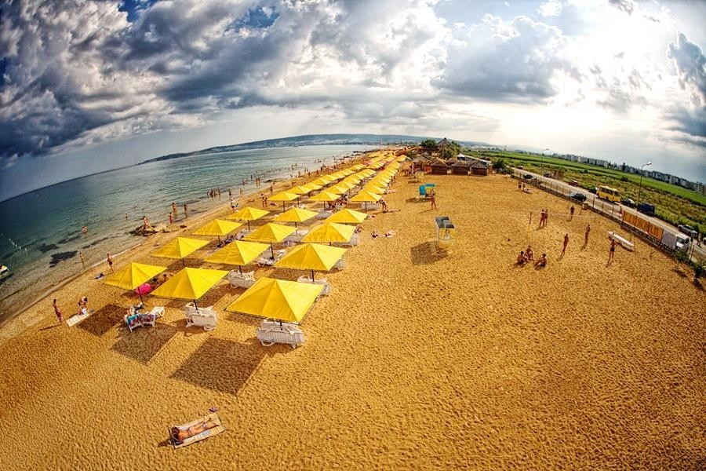
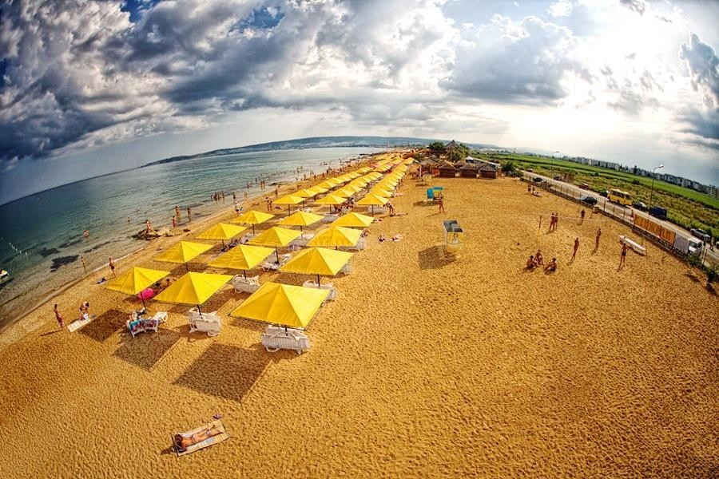 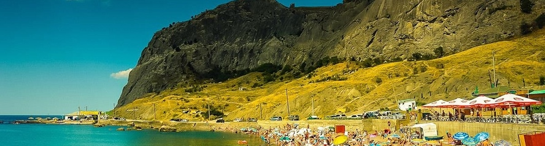
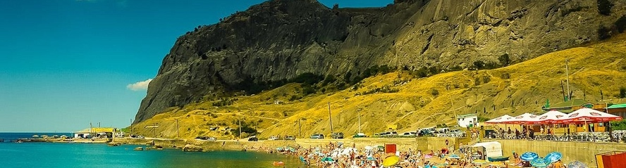 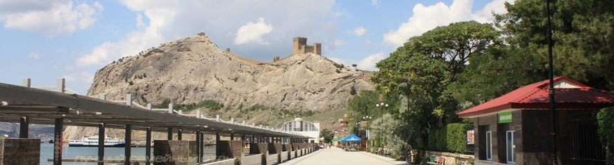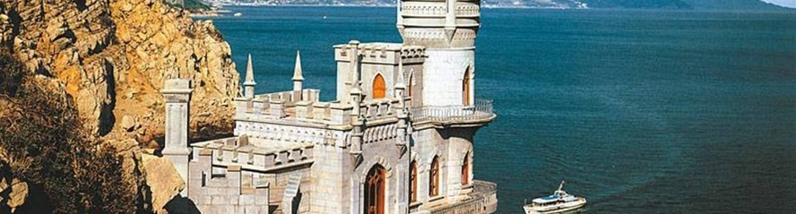
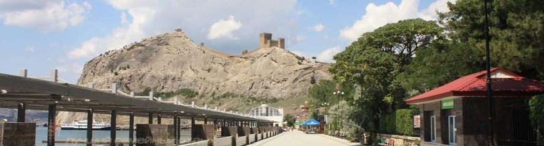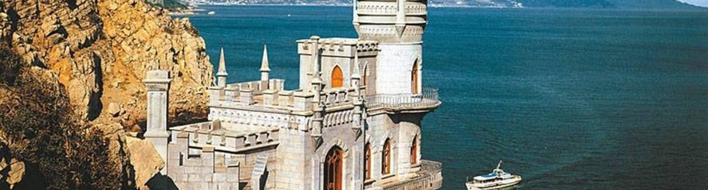 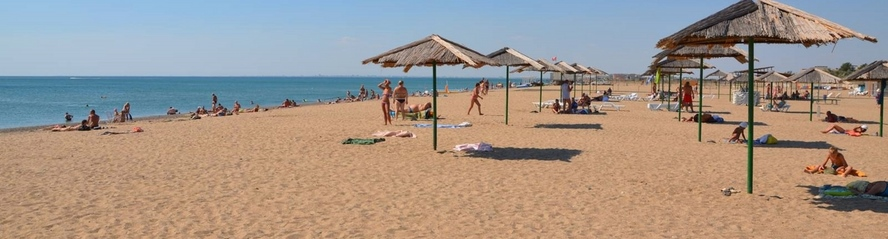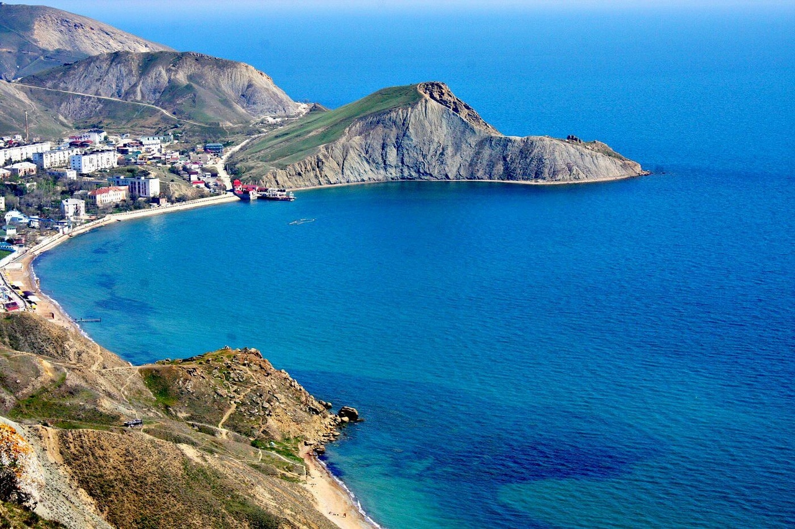
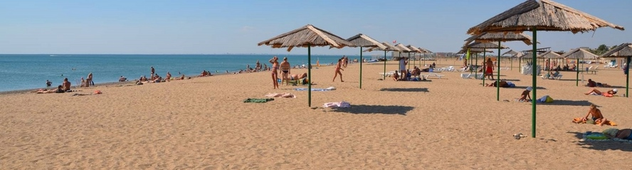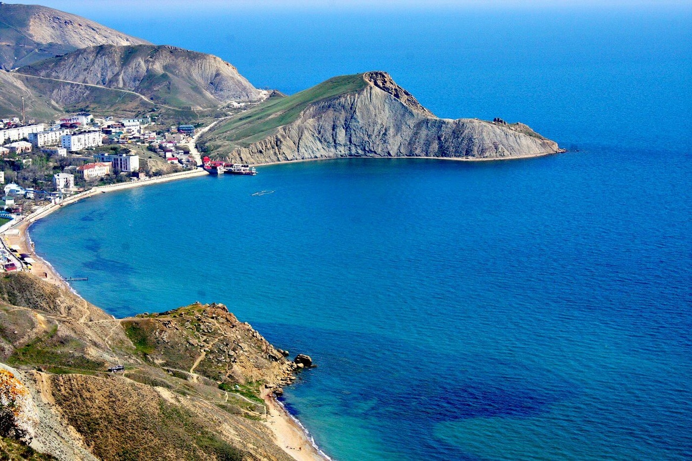 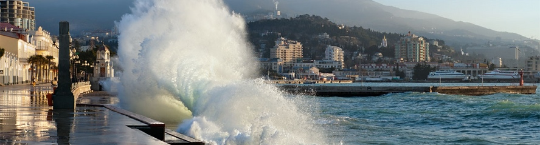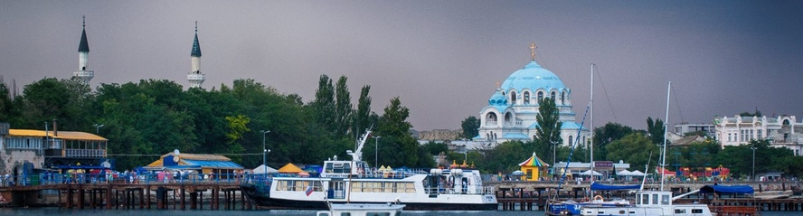
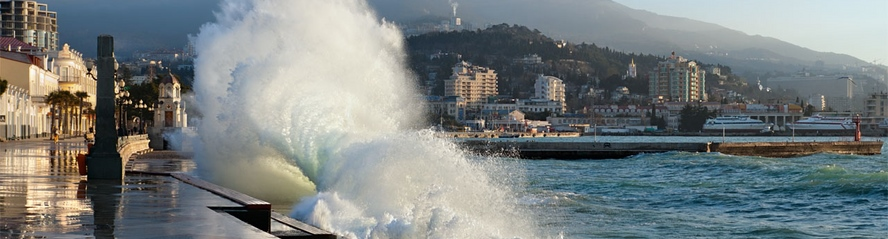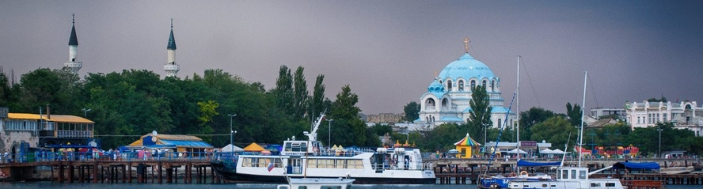Это обязательно нужно увидеть
Большинство отпускников не согласны ограничить отдых возлежанием на пляже (даже самом замечательном) – им подавай еще и достопримечательности. Крым богат ими настолько, что удовлетворит любой вкус. На полуострове найдутся как природные, так и рукотворные чудеса – в огромном количестве. Поехали!
Список в алфавитном порядке популярных объектов туризма и экскурсий в Крыму по городам и районам
Севастополь
- Айя мыс, заказник
- Айязьма урочище
- Алькадар винодельческое хозяйство
- Байдарская долина, Байдарские ворота перевал
- Балаклавская бухта
- Батилиман урочище
- Инкерман (Каламита) пещерный город и монастырь
- Инкерманский завод марочных вин
- Исторический бульвар и Панорама 1-й обороны Севастополя
- Ласпи бухта
- Малахов курган мемориальный комплекс
- Приморский бульвар Севастополя мемориальный комплекс
- Сапун-гора мемориальный комплекс
- Севастопольский аквапарк "Зурбаган"
- Севастопольский аквариум
- Севастопольский дельфинарий
- Скеля село, менгиры, пещера
- Феолент мыс
- Херсонес археологический заповедник
- Чембало генуэзская крепость
Бахчисарайский район - Бакла пещерный город
- Бахчисарайский ханский дворец
- Большой каньон Крыма ущелье
- Качи кальон пещерный монастырь
- Крымский заповедник
- Мангуп пещерный город
- Обсерватория (пгт Научный) научный центр
- Соколиное село, этнический центр
- Тепе-кермен пещерный город
- Успенский пещерный монастырь
- Чуфут-кале пещерный город
- Эски-кермен пещерный город
Симферополь и Симферопольский район - Ангарский перевал – см. Чатыр-даг
- Красные пещеры (Кизил-коба) и Долгоруковская яйла
- Крымский заповедник
- Мраморная пещера – см. Чатыр-даг
- Неаполь скифский археологический заповедник
- Республиканский краеведческий музей
- Симферопольский художественный музей
- Холм Славы (Колан-баир) см. Долгоруковская яйла
- Чатыр-даг гора
- Эмине-баир-хосар пещера – см. Чатыр-даг
Евпатория и Сакский район - Банановая республика "Аквапаркос"
- Гезлев комплекс средневековых памятников Евпатории
- Джума-джами мечеть
- Донузлав озеро
- Евпаторийский Динапарк
- Евпаторийский космический центр
- «Золотой ключик» детский центр
- Кара-тобе. Центр экспериментальной детско-юношеской археологии
- Республика КаZантип (Поповка)
- Сакский курортный парк
- Сакское целебное озеро
- Солнышко развлекательный центр
Черноморский, Раздольненский, Красноперекопский районы - Атлеш (Большой и Малый) мысы
- Большой Кастель балка
- Джангуль (кекуры) приморский скальный хаос
- Донузлав озеро
- Калос Лимен античный город у п. Черноморское
- Перекоп древнее оборонительное сооружение
- Тарханкут мыс
Большая Ялта - Адалары скалы-островки
- Ай-Петри горный массив, центр туризма
- Ай-Тодор мыс – Ласточкино гнездо
- Алупкинский дворцово-парковый комплекс
- Артек Международный детский центр
- Аю-даг (Медведь-гора) заказник, археологический комплекс
- Голубой залив урочище, аквапарк
- Гурзуфский санаторно-парковый комплекс
- Кореизский Юсуповский дворец и другие виллы
- Кошка гора и скалы Симеиза
- Ласточкино гнездо замок
- Ливадийский дворцово-парковый комплекс
- Магарач урочище, винодельческий центр
- Мартьян мыс, заповедник - Никитский ботанический сад
- Массандра винодельческое объединение
- Массандровский дворец
- Массандровский пляж, центр пляжной культуры
- Медведь-гора
- Мисхорский санаторно-парковый комплекс
- Никитская расселина скалодром
- Никитский ботанический сад
- Парковое (Новый Кучук-кой) скульптурно-парковый комплекс
- «Поляна сказок» музей флористики и зоопарк «Сказка»
- Пушкинский грот
- Симеиз комплекс старинных вилл
- Солнечная тропа – Царская тропа
- Театр морских зверей
- Трехглазка пещера – см. Ай-Петри
- Учан-су водопад – см. Ялтинский заповедник
- Форосская церковь
- Форосский дворцово-парковый комплекс
- Харакс дворец и парк
- Ялтинская Набережная
- Ялтинский заповедник
Большая Алушта - Ай-Йори, целебный источник
- Алуштинский аквапарк "Миндальная роща"
- Ангарский перевал – см. Чатыр-даг
- Горное озеро у Алушты, место отдыха и конного туризма
- Демирджи горный массив, центр конного туризма
- Джур-Джур водопад
- Долина Привидений, памятник природы
- Космо-Дамиановский монастырь
- Панагия урочище и Чобан-куле башня
- Партенитский санаторно-парковый комплекс и дельфинарий
- Профессорский (Рабочий) уголок курорт
- Роман-кош горная вершина – см. Крымский заповедник
- Сотера (Сатера) мыс, долина
- «Утес» дворцово-парковый комплекс
- Чатыр-даг гора
Судакский район - Архадерессе (Солнечная Долина) – урочище, винодельческое хозяйство
- Генуэзская крепость в Судаке
- Меганом мыс, центр дайвинга
- Новый Свет урочище, завод шампанских вин
Белогорский район и Старый Крым - Ак-кая (Белая скала) горный массив
- Тайган парк львов и сафари парк в Белогорском районе
- Сурб-Хач монастырь
Феодосия и Коктебель - Грина дом-музей в Феодосии
- Дом Поэта М. Волошина
- Кара-даг заповедник, дельфинарий
- Кафа комплекс памятников средневековья Феодосии
- Клуб-117 развлекательный комплекс у Феодосии
- Коктебель – см. Дом Поэта М. Волошина
- Коктебельский аквапарк
- Лисья бухта – см. Эчки-даг
- Тихая бухта
- Узун-сырт (гора Климентьева) центр планерного спорта
- Ухо Земли пещера – см. Эчки-даг
- Феодосийская картинная галерея Айвазовского
- Хамелеон мыс – см. Тихая бухта
- Эчки-даг – горный массив
Керченский полуостров - Аджимушкайские каменоломни мемориальный комплекс
- Арабатская стрелка - песчаная коса
- Казантип мыс, заповедник
- Керченский пролив, крепость Ени-кале, Керченская крепость, о. Тобечик
- Опук гора, заповедник
- Пантикапей археологический заповедник
- Тобечик озеро см. Керченский пролив
- Чокрак озеро
- Царский курган см. Аджимушкайские каменоломни
Смотрите также:
Новости
Контакты
Тел. +7 (982) 246-76-39
E-mail: ser.elisei-gerko@yandex.ru
Вы можете оформить заказ прямо сейчас или заказать обратный звонок: написать


{kind=link}
{kind=link}
{kind=link}